類似図面検索 for kintone 設定ガイド
PlugBits Drawingは、kintone上で図面の類似検索ができるサービスです。図面をアップロードすると、過去の似た図面を数秒で探せます。
このページでは、お申し込み後に届く開始案内メールを受け取ってから、類似検索が使えるようになるまでの設定手順を説明します。所要時間は約10分です。
設定を始める前に、何が必要ですか?
次の3つが揃っていれば始められます。
- 開始案内メール — お申し込み後にお送りするメールです。API Keyとプラグインのダウンロードリンクが記載されています
- プラグインZIP — メール内のリンクからダウンロードしておきます
- kintoneの管理権限 — プラグインの読み込みにはシステム管理権限、アプリへの追加にはそのアプリの管理権限が必要です
図面を管理しているkintoneアプリ(図面台帳など)に、図番・品名・図面PDFの添付ファイルフィールドがあることを前提にしています。
プラグインをkintoneに読み込むには?
kintoneシステム管理の「プラグイン」画面から、ダウンロードしたZIPを読み込みます。
- kintone画面右上の歯車アイコンから「kintoneシステム管理」を開きます
- 「その他」の中の「プラグイン」をクリックします
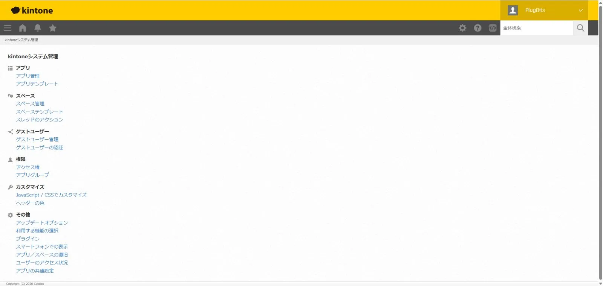
- 左上の「読み込む」ボタンを押し、ダウンロードしたZIPファイル(kintone-drawing-similarity.zip)を選択して「読み込む」を押します
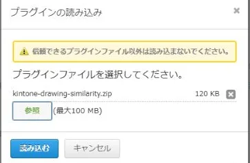
- 一覧に「類似図面検索」が表示されれば読み込み完了です。バージョン番号が表示されます
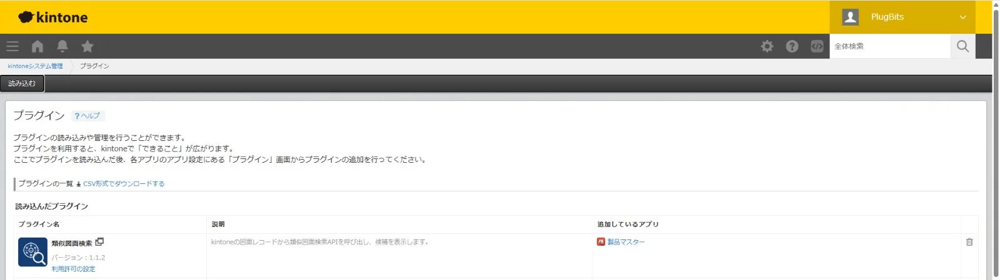
アプリにプラグインを追加するには?
図面を管理しているアプリの設定画面から、読み込んだプラグインを追加します。
- 対象アプリを開き、右上の歯車アイコンからアプリの設定を開きます
- 「設定」タブの「カスタマイズ/サービス連携」にある「プラグイン」をクリックします
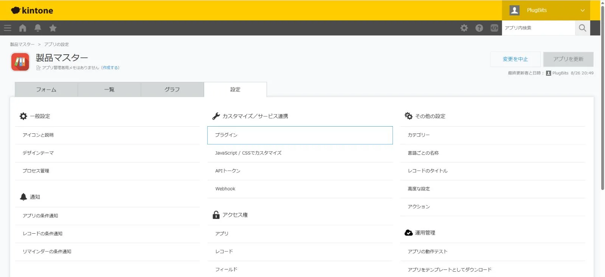
- 「追加する」を押し、「類似図面検索」にチェックを入れて追加します
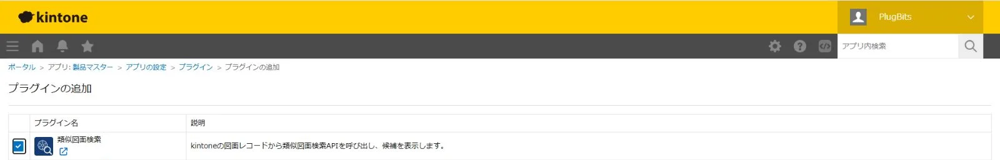
接続設定では何を入力しますか?
接続先プランを選び、開始案内メールに記載のAPI Keyを貼り付けて、接続テストを実行します。
- 追加したプラグインの歯車アイコン(設定)を開きます
- 接続先プランで「無料プラン」を選択します(有料プランをご契約の場合は「有料プラン」)
- API Keyに、開始案内メールに記載のキーをそのまま貼り付けます
- テナントIDは、お使いのkintoneドメインから自動で判定されるため入力不要です
- 「接続テスト」ボタンを押し、「✓ 接続OK」と表示されることを確認します
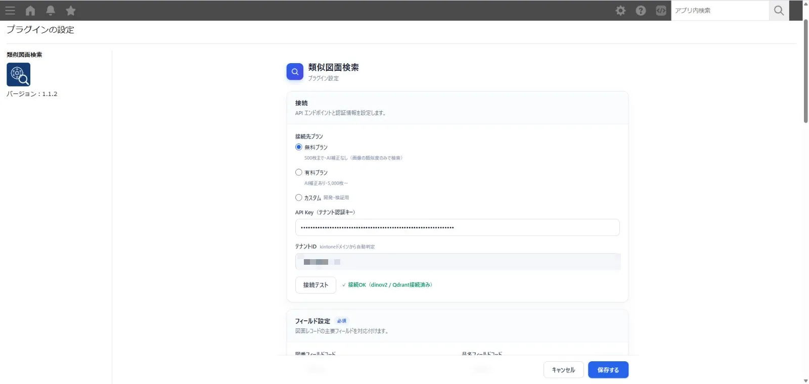
フィールド設定では何を対応付けますか?
アプリのどのフィールドが図番・品名・図面PDFなのかをプラグインに教えます。必須は4つです。
| 図番フィールドコード | 図面番号が入っているフィールド(必須) |
|---|---|
| 品名フィールドコード | 品名のフィールド(必須) |
| PDFファイルフィールドコード | 図面PDFの添付ファイルフィールド(必須) |
| 加工方法フィールドコード | 加工方法のフィールド(必須)。選択肢は「加工方法 選択肢」にカンマ区切りで入力します(例: レーザー,マシニング,プレス,溶接) |
材質・寸法(板厚/外径)・タグ・AI形状タグなどの任意フィールドは、設定するとスコア補正やタグ機能に使われます。未設定でも動作します。
「検索結果に表示する追加フィールド」にフィールドコードをカンマ区切りで指定すると(例: 見積単価,加工工程,最終受注日)、類似検索の結果カードにその値が表示されます。見積前に過去の単価を引きたい場合に便利です。
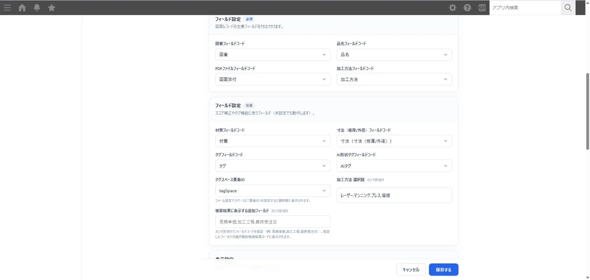
表示設定と「高速サムネイル表示」とは?
画面に表示するボタンや情報を選ぶ設定です。「高速サムネイル表示」はONを推奨します。
高速サムネイル表示をONにすると、図面の縮小画像(300px)を暗号化して検索サーバーに保存し、ギャラリーと検索結果のサムネイル表示が高速になります。復号鍵はこのプラグイン設定の中にのみ保存され、サーバー側ではサムネイルを復号できません。ONにした後に登録・再登録した図面から適用されます。
そのほかのスイッチは、必要になったときにONにすれば十分です。
- 「一括図面登録」ボタンを表示 — 一覧画面のヘッダーから複数の図面をまとめて登録するボタンを出します
- 「過去図面アーカイブ取り込み」を表示 — kintoneに登録せず、フォルダ内のPDFをまとめて検索対象に追加するメニューを出します
- デバッグ情報を表示 — 開発者向けです。通常はOFFのままにしてください
「ボタン表示」では、図面登録・図面検索などのボタンを表示する一覧を絞れます。ギャラリー用の一覧だけにチェックを入れておくと、通常の一覧画面がすっきりします。
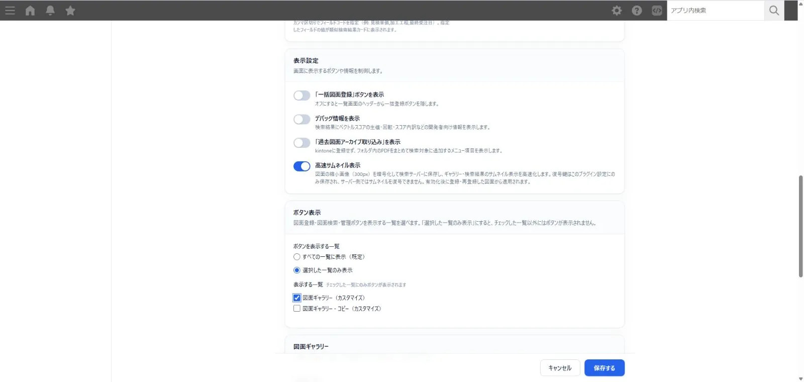
図面ギャラリーを使うには?
一覧の「カスタマイズビュー」を1つ作り、プラグイン設定の「ギャラリービュー」でそのビューを選びます。
- アプリの設定の「一覧」タブで新しい一覧を作成し、レコード一覧の表示形式で「カスタマイズ」を選びます(名前は「図面ギャラリー」など。HTMLは空のままで構いません。ページネーションはオフを推奨します)
- いったん「アプリを更新」で反映します
- プラグイン設定に戻り、「ギャラリービュー」で作成したビューを選択します
「絞り込みフィールド」でチェックしたフィールド(加工方法など、値の種類が有限なフィールド向き)は、ギャラリー左パネルからの絞り込みに使えます。「図面クリック時の開き方」は既定の「新しいタブで開く」のままを推奨します。
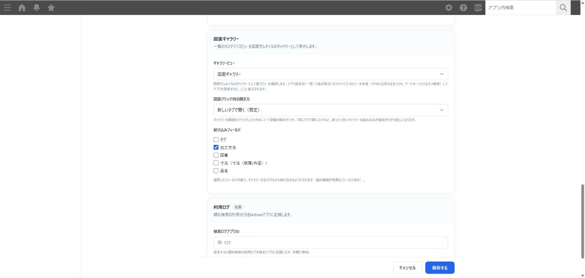
設定が完了すると、作成したビューが図面サムネイルのギャラリーになります。左パネルの絞り込みと図番・品名の検索が使えます。
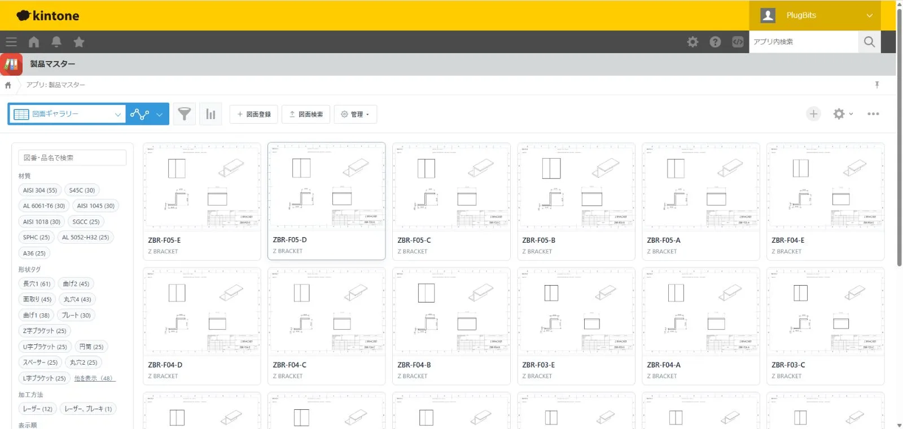
設定を反映するには?
プラグイン設定の「保存する」だけでは反映されません。アプリの設定画面に戻って「アプリを更新」を押してください。
- プラグイン設定画面の右下「保存する」を押します
- アプリの設定画面に戻り、右上の「アプリを更新」を押します
プラグイン設定を保存すると、画面上部に「アプリを更新」を促すメッセージが表示されます。
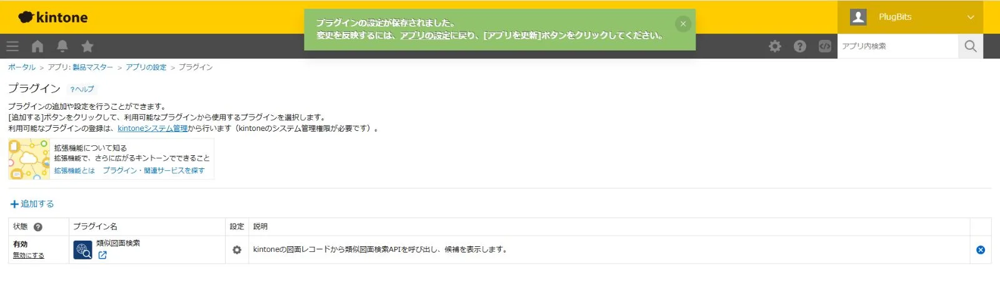
これで設定は完了です。図面を登録すると検索対象に追加され、レコード詳細画面やギャラリーから類似図面を探せるようになります。
無料プランの「500枚」はどう数えますか?
登録した図面の合計が500枚までで、期間の制限はありません。
月ごとにリセットされる方式ではなく、検索対象として登録済みの図面の合計枚数です。無料プランはAI補正なしのため、図番などのテキストは使わず画像の類似度のみで検索します。500枚を超えて使いたい場合は、有料プラン(月額9,800円・30日返金保証)をご検討ください。詳しくは料金ページをご覧ください。
困ったときは?
開始案内メールへの返信か、support@plugbits.app までご連絡ください。
個人で開発・運営しているサービスのため、返信も開発者本人が行います。設定でつまずいた箇所は、そのままこのガイドの改善に反映します。